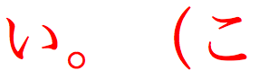

Updated Sun 21 Oct 2014 • tags japanese, scriptnotes
This page provides information about the characteristics of the scripts used to write Japanese. It is not intended to be exhaustively scientific – merely to give a basic idea of the essential features of the scripts.
世界的に話すなら、Unicodeです。第10回のUnicode会議は1997年3月10～12日、ドイツのマインツで開かれます。 参 加 希 望 の方は今すぐ登録してください。（この会議では、グローバルなインタネット、Unicode、ソフトウェアの国際化およびローカリゼーション、OSおよびアプリケーションでのUnicodeのインプリメンテーション、フォント、テキスト表示、マルチ言語コンピューティングにおける業界の専門家が集まります。）
| Script name | Han, Hiragana, Katakana |
|---|---|
| Script type | Ideographic & syllabic |
| Number of characters (CLDR) | 2130 |
| Case distinction | no |
| Combining characters | 0 |
| Multiple combining characters | no |
| Context-based positioning | no |
| Contextual shaping | no |
| Cursive script | no |
| Many more glyphs than characters? | no |
| Text direction | ltr / tb-rl |
| Baseline | low |
| Space is word separator | no |
| Wraps at | character |
| Justification | inter-character |
| Non-ASCII digits? | yes |
| Special features | ruby; complex glyphs |
Click on the orange text in the features list (right column) to see examples and notes. Click on highlighted text in the Sample section to see the characters. Click on the vertical blue bar, bottom right, to change font settings.
Japanese uses ideographic characters (called kanji) and two native syllabic scripts (hiragana and katakana) in addition to Latin (which is called romaji), and mixes them all together.
In the highlighted examples you can see words consituted from each of these writing systems
Ideographic.
Hiragana.
Katakana.
And here is another word that has a kanji root, but uses hiragana for grammatical endings.
Japanese can be set both horizontally and vertically. Horizontal lines are read left-to-right. Vertical lines are read top-to-bottom, and progress from right to left across the page.
If your browser supports vertical text, you can change the direction of the sample above using this control:
Japanese rarely uses spaces. In the sample text there are gaps around punctuation, but these are produced by a lack of 'ink' in parts of the square character glyphs:

You can verify this by clicking on the highlighted text. You'll see only four characters make up this sequence, and none are spaces.
The pronunciation of Japanese ideographic characters cannot be guessed, and so can pose difficulties for those learning the language. A common way around this problem is to annotate the text with kana characters. This is called ruby, or in its most common form furigana. The following example uses markup to indicate which is base text and which is ruby, however not all browsers can display ruby correctly.
The way that the markup is written for this example, browsers that cannot display ruby alongside the base characters will display it in parentheses.
Lines are normally wrapped between characters – word boundaries have no significance for the wrapping. Japanese should, however, take into account a few rules (kinsoku rules) which dictate what characters cannot appear at the end or start of a line.
For example, if your browser supports Japanese wrapping correctly, and if you vary the width of the browser window, it should be impossible to get the japanese full stop after the highlighted example to appear at the beginning of a line.
Japanese justifies text using a complex set of rules which adjust the space between characters on a line. Some characters are adjusted before others.
To see how your browser justifies Japanese text, use this control:
This is the lists of characters (exemplarCharacters) used by Japanese according to CLDR. There are hundreds more characters that can be used in Japanese.
ゞゝヽヾぁァあアぃィいイぅゥうウヴぇェえエぉォおオヵかカがガきキぎギくクぐグヶけケげゲこコごゴさサざザしシじジすスずズせセぜゼそソぞゾたタだダちチぢヂっッつツづヅてテでデとトどドなナにニぬヌねネのノはハばバぱパひヒびビぴピふフぶブぷプへヘべベぺペほホぼボぽポまマみミむムめメもモゃャやヤゅュゆユょョよヨらラりリるルれレろロゎヮわワゐヰゑヱをヲんン一丁七万丈三上下不与且世丘丙両並中丸丹主久乏乗乙九乱乳乾亀了予争事二互五井亜亡交亨享京亭人仁今介仏仕他付仙代令以仮仰仲件任企伏伐休会伝伯伴伸伺似但位低住佐体何余作佳併使例侍供依価侮侯侵便係促俊俗保信修俳俵俸倉個倍倒候借倣値倫倹偉偏停健側偵偶偽傍傑傘備催債傷傾働像僕僚僧儀億儒償優元兄充兆先光克免児党入全八公六共兵具典兼内円冊再冒冗写冠冬冷准凍凝凡処凶凸凹出刀刃分切刈刊刑列初判別利到制刷券刺刻則削前剖剛剣剤副剰割創劇力功加劣助努励労効劾勅勇勉動勘務勝募勢勤勧勲勺匁包化北匠匹区医匿十千升午半卑卒卓協南単博占印危即却卵卸厄厘厚原厳去参又及友双反収叔取受叙口古句叫召可台史右号司各合吉同名后吏吐向君吟否含吸吹呈呉告周味呼命和咲哀品員哲唆唇唐唯唱商問啓善喚喜喝喪喫営嗣嘆嘉嘱器噴嚇囚四回因団困囲図固国圏園土圧在地坂均坊坑坪垂型垣埋城域執培基堀堂堅堕堤堪報場塀塁塊塑塔塗塚塩塾境墓増墜墨墳墾壁壇壊壌士壮声壱売変夏夕外多夜夢大天太夫央失奇奉奏契奔奥奨奪奮女奴好如妃妄妊妙妥妨妹妻姉始姓委姫姻姿威娘娠娯婆婚婦婿媒嫁嫌嫡嬢子孔字存孝季孤学孫宅宇守安完宗官宙定宜宝実客宣室宮宰害宴宵家容宿寂寄密富寒寛寝察寡寧審寮寸寺対寿封専射将尉尊尋導小少尚就尺尼尽尾尿局居屈届屋展属層履屯山岐岩岬岳岸峠峡峰島崇崎崩川州巡巣工左巧巨差己巻市布帆希帝帥師席帯帰帳常帽幅幕幣干平年幸幹幻幼幽幾庁広床序底店府度座庫庭庶康庸廃廉廊延廷建弁弊式弐弓弔引弘弟弦弧弱張強弾当形彩彫彰影役彼往征径待律後徐徒従得御復循微徳徴徹心必忌忍志忘忙応忠快念怒怖思怠急性怪恋恐恒恥恨恩恭息恵悔悟悠患悦悩悪悲悼情惑惜惨惰想愁愉意愚愛感慈態慌慎慕慢慣慨慮慰慶憂憎憤憩憲憶憾懇懐懲懸成我戒戦戯戸戻房所扇扉手才打払扱扶批承技抄把抑投抗折抜択披抱抵抹押抽担拍拐拒拓拘拙招拝拠拡括拷拾持指挑挙挟振挿捕捜捨据掃授掌排掘掛採探接控推措掲描提揚換握揮援揺損搬搭携搾摂摘摩撃撤撮撲擁操擦擬支改攻放政故敏救敗教敢散敬数整敵敷文斉斎斗料斜斤斥断新方施旅旋族旗既日旧旨早旬昆昇昌明易昔星映春昨昭是昼時晩普景晴晶暁暇暑暖暗暦暫暮暴曇曜曲更書曹替最月有服朕朗望朝期木未末本札朱朴机朽杉材村束条来杯東松板析林枚果枝枠枢枯架柄某染柔柱柳査栄栓校株核根格栽桃案桑桜桟梅械棄棋棒棚棟森棺植検業極楼楽概構様槽標模権横樹橋機欄欠次欧欲欺款歌歓止正武歩歯歳歴死殉殊残殖殴段殺殻殿母毎毒比毛氏民気水氷永汁求汎汗汚江池決汽沈沖没沢河沸油治沼沿況泉泊泌法泡波泣泥注泰泳洋洗洞津洪活派流浄浅浜浦浪浮浴海浸消涙涯液涼淑淡深混添清渇済渉渋渓減渡渦温測港湖湯湾湿満源準溝溶滅滋滑滝滞滴漁漂漆漏演漠漢漫漬漸潔潜潟潤潮澄激濁濃濫濯瀬火灯灰災炉炊炎炭点為烈無焦然焼煙照煩煮熟熱燃燥爆爵父片版牙牛牧物牲特犠犬犯状狂狩独狭猛猟猫献猶猿獄獣獲玄率玉王珍珠班現球理琴環璽瓶甘甚生産用田由甲申男町画界畑畔留畜畝略番異畳疎疑疫疲疾病症痘痛痢痴療癒癖発登白百的皆皇皮皿盆益盗盛盟監盤目盲直相盾省看県真眠眺眼着睡督瞬矛矢知短矯石砂研砕砲破硝硫硬碁碑確磁磨礁礎示礼社祈祉祖祚祝神祥票祭禁禄禅禍禎福秀私秋科秒秘租秩称移程税稚種稲稼稿穀穂積穏穫穴究空突窃窒窓窮窯立竜章童端競竹笑笛符第筆等筋筒答策箇算管箱節範築篤簡簿籍米粉粋粒粗粘粛粧精糖糧糸系糾紀約紅紋納純紙級紛素紡索紫累細紳紹紺終組経結絞絡給統絵絶絹継続維綱網綿緊総緑緒線締編緩緯練縁縄縛縦縫縮績繁繊織繕繭繰缶罪置罰署罷羅羊美群義羽翁翌習翻翼老考者耐耕耗耳聖聞聴職肉肌肖肝肢肥肩肪肯育肺胃胆背胎胞胴胸能脂脅脈脚脱脳脹腐腕腰腸腹膚膜膨臓臣臨自臭至致興舌舎舗舞舟航般舶船艇艦良色芋芝花芳芸芽苗若苦英茂茎茶草荒荘荷菊菌菓菜華落葉著葬蒸蓄蔵薄薦薪薫薬藩藻虐虚虜虞虫蚊蚕蛇蛍蛮融血衆行術街衛衝衡衣表衰衷袋被裁裂装裏裕補裸製複褐褒襟襲西要覆覇見規視覚覧親観角解触言訂計討訓託記訟訪設許訳訴診証詐詔評詞詠試詩詰話該詳誇誉誌認誓誕誘語誠誤説読課調談請論諭諮諸諾謀謁謄謙講謝謡謹識譜警議譲護谷豆豊豚象豪貝貞負財貢貧貨販貫責貯貴買貸費貿賀賃賄資賊賓賛賜賞賠賢賦質購贈赤赦走赴起超越趣足距跡路跳践踊踏躍身車軌軍軒軟転軸軽較載輝輩輪輸轄辛辞辱農辺込迅迎近返迫迭述迷追退送逃逆透逐逓途通逝速造連逮週進逸遂遅遇遊運遍過道達違遠遣適遭遮遵遷選遺避還邦邪邸郊郎郡部郭郵郷都酌配酒酔酢酪酬酵酷酸醜醸釈里重野量金針釣鈍鈴鉄鉛鉢鉱銀銃銅銑銘銭鋭鋳鋼錘錠錬錯録鍛鎖鎮鏡鐘鑑長門閉開閑間関閣閥閲闘防阻附降限陛院陣除陥陪陰陳陵陶陸険陽隅隆隊階随隔際障隠隣隷隻雄雅集雇雉雌雑離難雨雪雰雲零雷電需震霊霜霧露青静非面革靴韓音韻響頂項順預頑頒領頭頻頼題額顔顕願類顧風飛食飢飯飲飼飽飾養餓館首香馬駄駅駆駐騎騒験騰驚骨髄高髪鬼魂魅魔魚鮮鯨鳥鳴鶏麗麦麻黄黒黙鼓鼻齢
- , ; : ! ? . ( ) [ ] { }
兌拼楔錄鳯